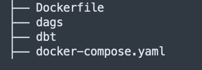
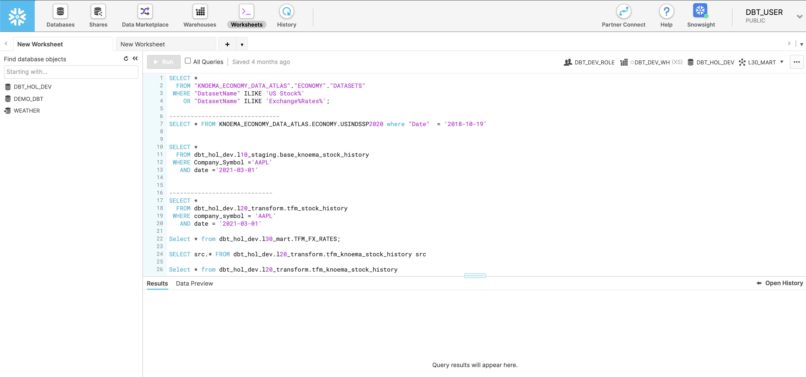
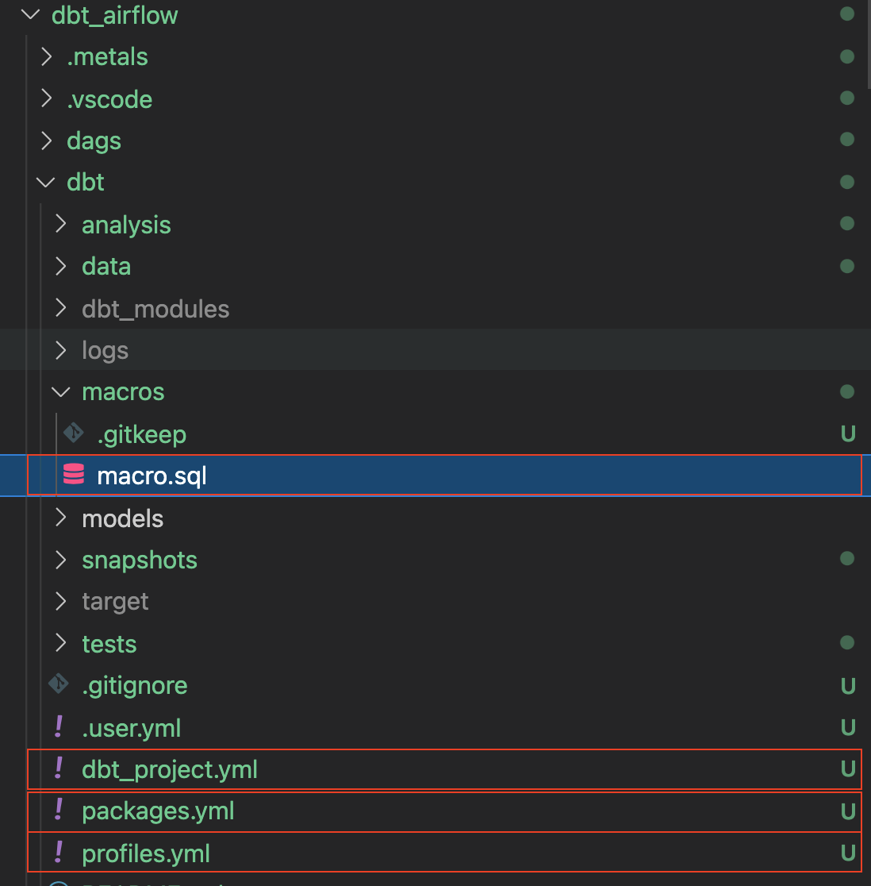
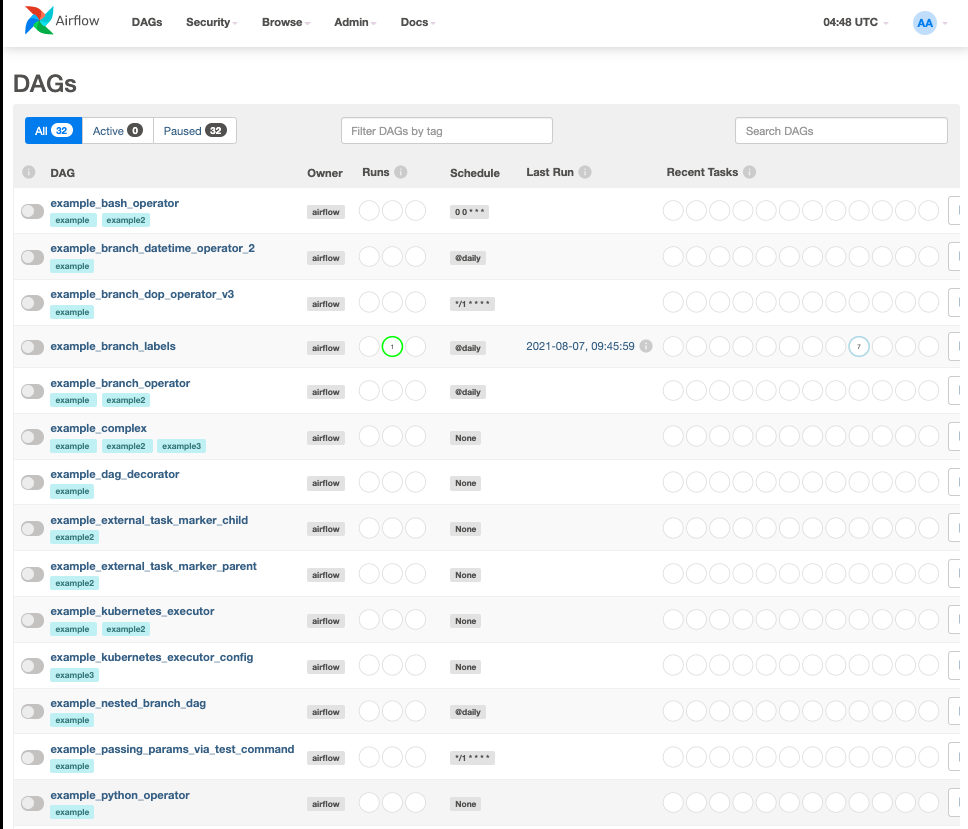
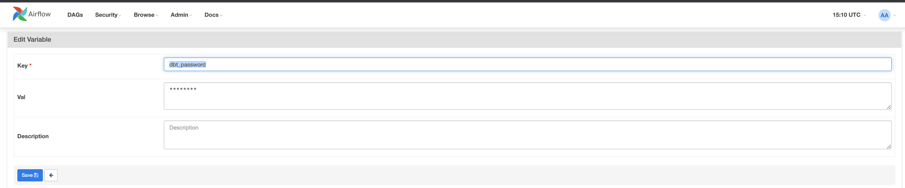
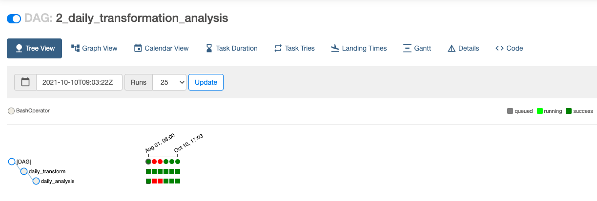

Numerous business are looking at modern data strategy built on platforms that could support agility, growth and operational efficiency. Snowflake is Data Cloud, a future proof solution that can simplify data pipelines for all your businesses so you can focus on your data and analytics instead of infrastructure management and maintenance.
Apache Airflow is an open-source workflow management platform that can be used to author and manage data pipelines. Airflow uses worklows made of directed acyclic graphs (DAGs) of tasks.
dbt is a modern data engineering framework maintained by dbt Labs that is becoming very popular in modern data architectures, leveraging cloud data platforms like Snowflake. dbt CLI is the command line interface for running dbt projects. The CLI is free to use and open source.
In this virtual hands-on lab, you will follow a step-by-step guide to using Airflow with dbt to create data transformation job schedulers.
Let's get started.
Prerequisites
This guide assumes you have a basic working knowledge of Python and dbt
What You'll Learn
- how to use an opensource tool like Airflow to create a data scheduler
- how do we write a DAG and upload it onto Airflow
- how to build scalable pipelines using dbt, Airflow and Snowflake
What You'll Need
You will need the following things before beginning:
- Snowflake
- A Snowflake Account.
- A Snowflake User created with appropriate permissions. This user will need permission to create objects in the DEMO_DB database.
- GitHub
- A GitHub Account. If you don't already have a GitHub account you can create one for free. Visit the Join GitHub page to get started.
- A GitHub Repository. If you don't already have a repository created, or would like to create a new one, then Create a new respository. For the type, select
Public(although you could use either). And you can skip adding the README, .gitignore and license for now. - Integrated Development Environment (IDE)
- Your favorite IDE with Git integration. If you don't already have a favorite IDE that integrates with Git I would recommend the great, free, open-source Visual Studio Code.
- Your project repository cloned to your computer. For connection details about your Git repository, open the Repository and copy the
HTTPSlink provided near the top of the page. If you have at least one file in your repository then click on the greenCodeicon near the top of the page and copy theHTTPSlink. Use that link in VS Code or your favorite IDE to clone the repo to your computer. - Docker
- Docker Desktop on your laptop. We will be running Airflow as a container. Please install Docker Desktop on your desired OS by following the Docker setup instructions.
What You'll Build
- A simple working Airflow pipeline with dbt and Snowflake
First, let us create a folder by running the command below
mkdir dbt_airflow && cd "$_"
Next, we will get our docker-compose file of our Airflow. To do so lets do a curl of the file onto our local laptop
curl -LfO 'https://airflow.apache.org/docs/apache-airflow/2.3.0/docker-compose.yaml'
We will be now adjusting our docker-compose file - add in our 2 folders as volumes. The dags is the folder where the Airflow DAGs are placed for Airflow to pick up and analyse. The dbt is the folder in which we configured our dbt models and our CSV files.
volumes:
- ./dags:/opt/airflow/dags
- ./logs:/opt/airflow/logs
- ./plugins:/opt/airflow/plugins
- ./dbt:/dbt # add this in
- ./dags:/dags # add this in
We would now need to create additional file with additional docker-compose parameters. This way dbt will be installed when the containers are started.
.env
_PIP_ADDITIONAL_REQUIREMENTS=dbt==0.19.0
We would now need to create a dbt project as well as an dags folder.
For the dbt project, do a dbt init dbt - this is where we will configure our dbt later in step 4.
For the dags folder, just create the folder by doing
mkdir dags
Your tree repository should look like this

Now that we have gotten our repo up, it is time to configure and set up our dbt project.
Before we begin, let's take some time to understand what we are going to do for our dbt project.
As can be seen in the diagram below, we have 3 csv files bookings_1, bookings_2 and customers . We are going to seed these csv files into Snowflake as tables. This will be covered in step 4 in detailed later.
Following this, we are going to merge bookings_1 and bookings_2 tables into combined_bookings. Next, we are going to join the combined_bookings and customer table on customer_id to form the prepped_data table.
Finally, we are going to perform our analysis and transformation on the prepped_data by creating 2 views.
hotel_count_by_day.sql: This will create a hotel_count_by_day view in the ANALYSIS schema in which we will count the number of hotel bookings by day.thirty_day_avg_cost.sql: This will create a thirty_day_avg_cost view in the ANALYSIS schema in which we will do a average cost of booking for the last 30 days.

First, let's go to the Snowflake console and run the script below. What this does is create a dbt_user and a dbt_dev_role and after which we set up a database for dbt_user.
USE ROLE SECURITYADMIN;
CREATE OR REPLACE ROLE dbt_DEV_ROLE COMMENT='dbt_DEV_ROLE';
GRANT ROLE dbt_DEV_ROLE TO ROLE SYSADMIN;
CREATE OR REPLACE USER dbt_USER PASSWORD='<PASSWORD>'
DEFAULT_ROLE=dbt_DEV_ROLE
DEFAULT_WAREHOUSE=dbt_WH
COMMENT='dbt User';
GRANT ROLE dbt_DEV_ROLE TO USER dbt_USER;
-- Grant privileges to role
USE ROLE ACCOUNTADMIN;
GRANT CREATE DATABASE ON ACCOUNT TO ROLE dbt_DEV_ROLE;
/*---------------------------------------------------------------------------
Next we will create a virtual warehouse that will be used
---------------------------------------------------------------------------*/
USE ROLE SYSADMIN;
--Create Warehouse for dbt work
CREATE OR REPLACE WAREHOUSE dbt_DEV_WH
WITH WAREHOUSE_SIZE = 'XSMALL'
AUTO_SUSPEND = 120
AUTO_RESUME = true
INITIALLY_SUSPENDED = TRUE;
GRANT ALL ON WAREHOUSE dbt_DEV_WH TO ROLE dbt_DEV_ROLE;
Let's login with the dbt_user and create the database DEMO_dbt by running the command
CREATE OR REPLACE DATABASE DEMO_dbt

Now, let's go back to our project dbt_airflow > dbtthat we set up previously in step 1.
We will set up a few configurations for the respective files below. Please note for the dbt_project.yml you just need to replace the models section
profiles.yml
default:
target: dev
outputs:
dev:
type: snowflake
######## Please replace with your Snowflake account name
######## for example sg_demo.ap-southeast-1
account: <ACCOUNT_URL>.<REGION>
user: "{{ env_var('dbt_user') }}"
######## These environment variables dbt_user and dbt_password
######## are read from the variabls in Airflow which we will set later
password: "{{ env_var('dbt_password') }}"
role: dbt_dev_role
database: demo_dbt
warehouse: dbt_dev_wh
schema: public
threads: 200
packages.yml
packages:
- package: fishtown-analytics/dbt_utils
version: 0.6.4
dbt_project.yml
models:
my_new_project:
# Applies to all files under models/example/
transform:
schema: transform
materialized: view
analysis:
schema: analysis
materialized: view
Next, we will install the fishtown-analytics/dbt_utils that we had placed inside packages.yml. This can be done by running the command dbt deps from the dbt folder.
We will now create a file called custom_demo_macros.sql under the macros folder and input the below sql
{% macro generate_schema_name(custom_schema_name, node) -%}
{%- set default_schema = target.schema -%}
{%- if custom_schema_name is none -%}
{{ default_schema }}
{%- else -%}
{{ custom_schema_name | trim }}
{%- endif -%}
{%- endmacro %}
{% macro set_query_tag() -%}
{% set new_query_tag = model.name %} {# always use model name #}
{% if new_query_tag %}
{% set original_query_tag = get_current_query_tag() %}
{{ log("Setting query_tag to '" ~ new_query_tag ~ "'. Will reset to '" ~ original_query_tag ~ "' after materialization.") }}
{% do run_query("alter session set query_tag = '{}'".format(new_query_tag)) %}
{{ return(original_query_tag)}}
{% endif %}
{{ return(none)}}
{% endmacro %}
If everything is done correctly, your folder should look like below. The annotated boxes are what we just went through above.
Our final step here is to install our dbt module for db_utils. From the dbt directory run
dbt deps
and you would see the assoicated modules being installed in the dbt_modules folder
By now, you should see the folder structure as below:

We are done configuring dbt. Let us proceed on crafting our csv files and our dags in the next section.
In this section, we will be prepping our sample csv data files alongside the associated sql models.
To start, let us first create 3 excel files under the folder data inside the dbt folder.
bookings_1.csv
id,booking_reference,hotel,booking_date,cost
1,232323231,Pan Pacific,2021-03-19,100
1,232323232,Fullerton,2021-03-20,200
1,232323233,Fullerton,2021-04-20,300
1,232323234,Jackson Square,2021-03-21,400
1,232323235,Mayflower,2021-06-20,500
1,232323236,Suncity,2021-03-19,600
1,232323237,Fullerton,2021-08-20,700
bookings_2.csv
id,booking_reference,hotel,booking_date,cost
2,332323231,Fullerton,2021-03-19,100
2,332323232,Jackson Square,2021-03-20,300
2,332323233,Suncity,2021-03-20,300
2,332323234,Jackson Square,2021-03-21,300
2,332323235,Fullerton,2021-06-20,300
2,332323236,Suncity,2021-03-19,300
2,332323237,Berkly,2021-05-20,200
customers.csv
id,first_name,last_name,birthdate,membership_no
1,jim,jone,1989-03-19,12334
2,adrian,lee,1990-03-10,12323
Our folder structure should be like as below

Create 2 folders analysis and transform in the models folder. Please follow the sections below for analysis and transform respectively.
dbt models for transform folder
Inside the transform folder, we will have 3 SQL files
combined_bookings.sql: This will combine the 2 bookings CSV files we had above and create theCOMBINED_BOOKINGSview in theTRANSFORMschema.
combined_bookings.sql
{{ dbt_utils.union_relations(
relations=[ref('bookings_1'), ref('bookings_2')]
) }}
customer.sql: This will create aCUSTOMERview in theTRANSFORMschema.
customer.sql
SELECT ID
, FIRST_NAME
, LAST_NAME
, birthdate
FROM {{ ref('customers') }}
prepped_data.sql: This will create aPREPPED_DATAview in theTRANSFORMschema in which it will perform an inner join on theCUSTOMERandCOMBINED_BOOKINGSviews from the steps above.
prepped_data.sql
SELECT A.ID
, FIRST_NAME
, LAST_NAME
, birthdate
, BOOKING_REFERENCE
, HOTEL
, BOOKING_DATE
, COST
FROM {{ref('customer')}} A
JOIN {{ref('combined_bookings')}} B
on A.ID = B.ID
dbt models for analysis folder
Now let's move on to the analysis folder. Change to the analysis folder and create these 2 SQL files
hotel_count_by_day.sql: This will create a hotel_count_by_day view in theANALYSISschema in which we will count the number of hotel bookings by day.
SELECT
BOOKING_DATE,
HOTEL,
COUNT(ID) as count_bookings
FROM {{ ref('prepped_data') }}
GROUP BY
BOOKING_DATE,
HOTEL
thirty_day_avg_cost.sql: This will create a thirty_day_avg_cost view in theANALYSISschema in which we will do a average cost of booking for the last 30 days.
SELECT
BOOKING_DATE,
HOTEL,
COST,
AVG(COST) OVER (
ORDER BY BOOKING_DATE ROWS BETWEEN 29 PRECEDING AND CURRENT ROW
) as "30_DAY_AVG_COST",
COST - AVG(COST) OVER (
ORDER BY BOOKING_DATE ROWS BETWEEN 29 PRECEDING AND CURRENT ROW
) as "DIFF_BTW_ACTUAL_AVG"
FROM {{ ref('prepped_data') }}
Your file structure should be as below. We have already finished our dbt models and can proceed onto working on Airflow.

In our dags folder, create 2 files: init.py and transform_and_analysis.py. The init.py will initialise and see the CSV data. The transform_and_analysis.py will perform the transformation and analysis.
With Airflow, we can then schedule the transform_and_analysis DAG on a daily basis. However, in this example, we will be triggering the DAG manually.
init.py
from datetime import datetime
import os
from airflow import DAG
from airflow.operators.python import PythonOperator, BranchPythonOperator
from airflow.operators.bash import BashOperator
from airflow.operators.dummy_operator import DummyOperator
default_args = {
'owner': 'airflow',
'depends_on_past': False,
'start_date': datetime(2020,8,1),
'retries': 0
}
with DAG('1_init_once_seed_data', default_args=default_args, schedule_interval='@once') as dag:
task_1 = BashOperator(
task_id='load_seed_data_once',
bash_command='cd /dbt && dbt seed --profiles-dir .',
env={
'dbt_user': '{{ var.value.dbt_user }}',
'dbt_password': '{{ var.value.dbt_password }}',
**os.environ
},
dag=dag
)
task_1
transform_and_analysis.py
from airflow import DAG
from airflow.operators.python import PythonOperator, BranchPythonOperator
from airflow.operators.bash import BashOperator
from airflow.operators.dummy_operator import DummyOperator
from datetime import datetime
default_args = {
'owner': 'airflow',
'depends_on_past': False,
'start_date': datetime(2020,8,1),
'retries': 0
}
with DAG('2_daily_transformation_analysis', default_args=default_args, schedule_interval='@once') as dag:
task_1 = BashOperator(
task_id='daily_transform',
bash_command='cd /dbt && dbt run --models transform --profiles-dir .',
env={
'dbt_user': '{{ var.value.dbt_user }}',
'dbt_password': '{{ var.value.dbt_password }}',
**os.environ
},
dag=dag
)
task_2 = BashOperator(
task_id='daily_analysis',
bash_command='cd /dbt && dbt run --models analysis --profiles-dir .',
env={
'dbt_user': '{{ var.value.dbt_user }}',
'dbt_password': '{{ var.value.dbt_password }}',
**os.environ
},
dag=dag
)
task_1 >> task_2 # Define dependencies
Let's run our docker-compose up and go to http://localhost:8080/. The default username is airflow and password is airflow

We are now going to create 2 variables. Go to admin > Variables and click on the + icon.

Let us first create key of dbt_user and value dbt_user.

Now let us create our second key of dbt_password and value

We will now activate our DAGs. Click on the blue buttons for 1_init_once_seed_data and 2_daily_transformation_analysis

Running our 1_init_once_seed_data
Now, lets run our 1_init_once_seed_data to seed the data. To run click the play icon under the Actions on the right of the DAG.

Viewing Seed data in tables created under public schema
If all goes well when we go back to our Snowflake instance, we should see tree tables that have been successfully created in the PUBLIC schema.

Running our 2_daily_transformation_analysis
We will now run our second DAG 2_daily_transformation_analysis which will run our transform and analysis models

Our Transform and Analysis views have been created successfully!

Congratulations! You have created your first Apache Airflow with dbt and Snowflake! We encourage you to continue with your free trial by loading your own sample or production data and by using some of the more advanced capabilities of Airflow and Snowflake not covered in this lab.
Additional Resources:
- Join our dbt community Slack which contains more than 18,000 data practitioners today. We have a dedicated slack channel #db-snowflake to Snowflake related content.
- Quick tutorial on how to write a simple Airflow DAG
What we've covered:
- How to set up Airflow, dbt & Snowflake
- How to create a DAG and run dbt from our dag